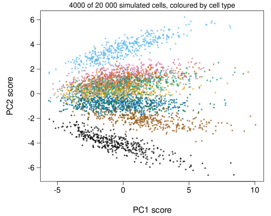
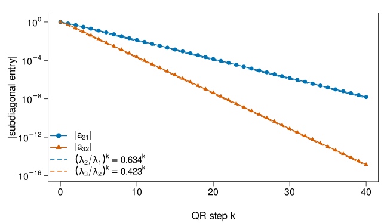
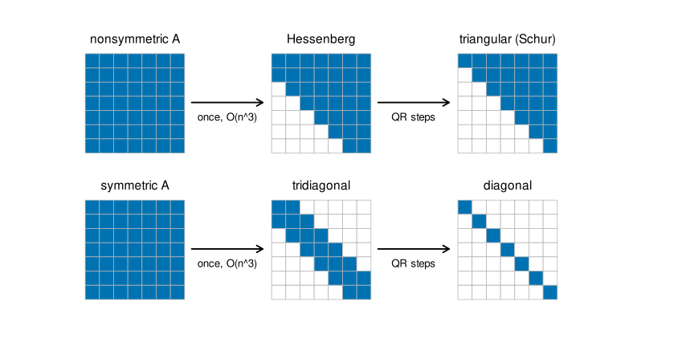
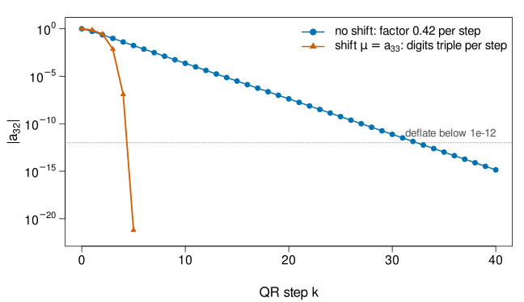
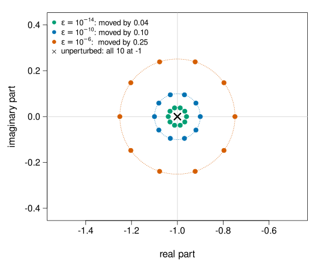
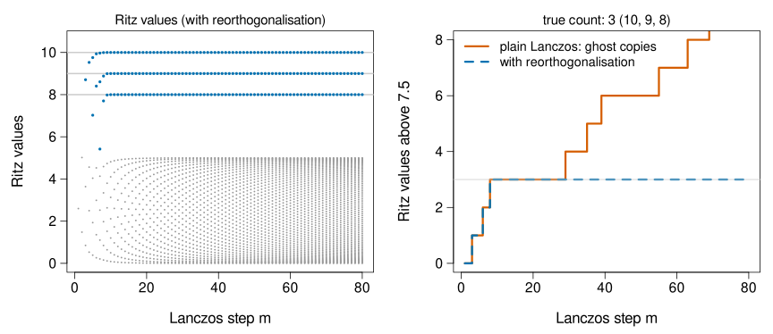
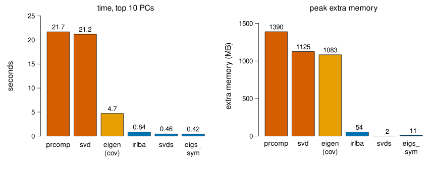

In Power iteration and friends we found one eigenvalue at a time by multiplying a vector by A again and again. This lecture is about what eigen() does to get all of them, and what to do when the matrix is too big for that.
The QR algorithm: factor A = QR, multiply back as RQ, repeat. It is power iteration on all vectors at once.
Two tricks make it fast: Hessenberg reduction first, and shifts.
Symmetric matrices are easy: real eigenvalues that move very little under rounding. Nonsymmetric ones can have complex eigenvalues, and their eigenvalues can be very sensitive.
For a large sparse matrix we want only a few eigenpairs: Krylov methods (Lanczos), as in irlba, RSpectra and scipy.sparse.linalg.eigsh.
Biology: PCA of 20 000 cells × 2 000 genes without forming a dense or covariance matrix, and a transit-compartment model whose eigenvalues a perturbation of 10^{-10} moves by 0.1.
A biology problem first
A single-cell RNA-seq experiment: 20 000 cells, 2 000 highly variable genes, log-transformed counts. Most entries are zero.
library(Matrix)dim(X) # cells x genes (simulated)# [1] 20000 2000nnzero(X) /length(X) # fraction of non-zero entries# [1] 0.1296979format(object.size(X), units ="MB") # sparse storage# [1] "59.4 Mb"format(object.size(as.matrix(X)), units ="MB") # the same matrix, dense# [1] "305.2 Mb"
PCA wants the top 10–50 eigenvectors of the gene–gene covariance matrix. The usual route centresX: subtract each gene’s mean. That makes every entry non-zero: the matrix becomes dense.
prcomp(as.matrix(X)) takes 22 s and 1.4 GB of extra memory here. The method at the end of this lecture takes 0.4 s and 11 MB.
With 100 000 cells (a typical atlas) the dense matrix alone is 1.6 GB.
Recap: PCA in one slide

Centre the columns: X_c = X - \mathbf 1\boldsymbol\mu^T (cells × genes).
The principal axes are the eigenvectors \mathbf v_i of X_c^TX_c (a 2000 × 2000 symmetric matrix); the variance along \mathbf v_i is \lambda_i/(n-1).
Equivalently, \mathbf v_i are the right singular vectors of X_c, \sigma_i = \sqrt{\lambda_i}, and the scores are X_c\mathbf v_i.
We need \mathbf v_1, \dots, \mathbf v_{10}, not all 2000.
How to choose the number of PCs, scaling and interpretation: the sister course. Here: how the numbers are computed.
Power iteration\mathbf x \leftarrow A\mathbf x/\|A\mathbf x\| finds the eigenvalue of largest |\lambda|; the error shrinks by |\lambda_2/\lambda_1| per step. Fish Leslie matrix: \lambda_1 = 1.177, rate 0.654, 55 steps.
It fails when |\lambda_2| = |\lambda_1| (semelparous fish: the estimate cycles) and crawls when the ratio is near 1 (slow-switching cells: 5406 steps).
Inverse iteration with shift \sigma finds the eigenvalue nearest \sigma; Rayleigh quotient iteration (\sigma = current Rayleigh quotient) converges cubically for symmetric A.
Ak <- Afor (k in1:30) { f <-qr(Ak) # Ak = Q R (Householder, as in lm) Ak <-qr.R(f) %*%qr.Q(f) # A_{k+1} = R Q}round(Ak, 6)# [,1] [,2] [,3]# [1,] 4.732051 1e-06 0.000000# [2,] 0.000001 3e+00 0.000000# [3,] 0.000000 0e+00 1.267949
R_kQ_k = Q_k^T(Q_kR_k)Q_k = Q_k^TA_kQ_k: each step is a similarity transform, so the eigenvalues never change.
The off-diagonal entries go to 0, and the eigenvalues appear on the diagonal.
Why it works: power iteration on all vectors at once
Accumulate the Qs: \;\hat Q_k = Q_1Q_2\cdots Q_k. Then A^k = \hat Q_k\hat R_k: \hat Q_k is the Q of A^k.
Ak <- A; Qk <-diag(3)for (k in1:5) { f <-qr(Ak); Qk <- Qk %*%qr.Q(f); Ak <-qr.R(f) %*%qr.Q(f)}A5 <- A %*% A %*% A %*% A %*% Amax(abs(Qk -qr.Q(qr(A5)))) # same Q as A^5# [1] 5.551115e-16
The columns of A^k are power iteration started from \mathbf e_1, \mathbf e_2, \mathbf e_3. QR orthonormalises them: column 1 → eigenvector 1, column 2 → the part orthogonal to it → eigenvector 2, …
This is simultaneous (subspace) iteration. The QR algorithm does it without ever forming A^k (which would overflow and lose all but the top direction).
How fast?

Entry a_{i+1,i} shrinks like |\lambda_{i+1}/\lambda_i|^k: the power-iteration rate for each pair of neighbours.
Close eigenvalues → slow. \lambda_2/\lambda_1 = 0.99 needs about 3700 steps for 16 digits.
When it stalls
A cell that switches deterministically between two states every generation: transition matrix with eigenvalues +1 and -1.
|\lambda_2/\lambda_1| = 1: power iteration cannot separate the two (the semelparous fish of Power iteration and friends), and neither can the QR algorithm. The matrix is already its own QR fixed point.
The check: off-diagonal entries that do not shrink. The fix: a shift.
First trick: Hessenberg form

One QR step on a full n \times n matrix costs O(n^3). First reduce A by Householder reflections to Hessenberg form (zeros below the first subdiagonal): O(n^3), once.
QR steps keep the Hessenberg form, and a step costs only O(n^2) (one Givens rotation per subdiagonal entry).
Symmetric A → tridiagonal: a QR step costs O(n).
Second trick: shifts and deflation

Shift: factor A_k - \mu I = QR, then A_{k+1} = RQ + \mu I. Still a similarity; the rate for the last entry becomes |\lambda_n - \mu| / |\lambda_{n-1} - \mu|. \mu = a_{nn} is a Rayleigh quotient: this is the Rayleigh quotient iteration of Power iteration and friends, working on the last row. Digits triple per step.
Deflate: once |a_{n,n-1}| < 10^{-12}, a_{nn} is an eigenvalue. Drop the last row and column and continue. Our 3 × 3: 62 steps unshifted, 7 shifted.
Predator–prey model linearised at its steady state (Jacobian J):
J <-rbind(c(-0.1, -1), # prey: self-limitation, eaten by predatorsc( 0.5, 0)) # predators: grow by eating preyeigen(J)$values# [1] -0.05+0.7053368i -0.05-0.7053368i2* pi /Im(eigen(J)$values[1]) # period of the oscillation# [1] 8.908064
A real matrix with complex eigenvalues -0.05 \pm 0.705i: a damped oscillation. Real part < 0: perturbations die out. Imaginary part: the frequency.
This is not rounding noise: complex eigenvalues are the answer.
Real arithmetic cannot split a complex pair
Jk <- Jfor (k in1:50) { f <-qr(Jk); Jk <-qr.R(f) %*%qr.Q(f) }round(Jk, 4) # after 50 steps: still a full 2 x 2 block# [,1] [,2]# [1,] -0.2314 -0.9291# [2,] 0.5709 0.1314eigen(Jk)$values # ...but its eigenvalues are right# [1] -0.05+0.7053368i -0.05-0.7053368i
The two eigenvalues have the same modulus, so (as for P) the QR iteration never makes a_{21} small; the block keeps rotating.
LAPACK stops at the real Schur form: upper triangular with 2 × 2 blocks on the diagonal, one per complex pair, and reads each pair off its block.
Sensitivity: a transit-compartment model
A drug passes through 10 transit compartments (rate 1 per hour) before it reaches the blood. A tiny recirculation from the last compartment back to the first:
n <-10K <-diag(-1, n)K[cbind(2:n, 1:(n -1))] <-1# compartment i-1 feeds compartment ieigen(K)$values# [1] -1 -1 -1 -1 -1 -1 -1 -1 -1 -1K[1, n] <-1e-10# recirculation: a fraction of 1e-10ev <-eigen(K)$valuesrange(Mod(ev +1)) # distance of every eigenvalue from -1# [1] 0.1 0.1
A change of 10^{-10} in one entry moves every eigenvalue by 0.1: a factor 10^9.
Why so sensitive?

The characteristic polynomial is (\lambda + 1)^{10} - \varepsilon = 0, so |\lambda + 1| = \varepsilon^{1/10}: the 10 eigenvalues sit on a circle of radius \varepsilon^{1/10}.
With n compartments the change is \varepsilon^{1/n}: the longer the chain, the worse.
A symmetric matrix with the same perturbation: eigenvalues move by at most 10^{-10}.
The check: is this eigenvalue trustworthy?
kappa(eigen(K)$vectors) # condition number of the eigenvectors# [1] 1184131481S <- A; S[1, 3] <- S[3, 1] <-1e-10# symmetric A, same perturbationeigen(S)$values -eigen(A)$values# [1] 3.333334e-11 -6.666623e-11 3.333334e-11set.seed(1)Kp <- K +1e-12*matrix(rnorm(n^2), n) # perturb at 1e-12 and recomputerange(Mod(eigen(Kp)$values +1)) # was exactly 0.1 for all ten# [1] 0.09994035 0.09995391
kappa(V) near 1: eigenvalues are as accurate as the matrix. kappa(V) of 10^9: up to 9 digits lost.
Perturb and recompute: change the entries at the level of their uncertainty and see how far the eigenvalues move. Here 10^{-12} in, 5\times10^{-5} out.
Big problems: keep every power-iteration vector
For the single-cell matrix: dense X_c is 20 000 × 2 000 and we want 10 eigenpairs of C = X_c^TX_c (2 000 × 2 000).
Power iteration keeps only the last vector A^{m-1}\mathbf q and throws away \mathbf q, A\mathbf q, \dots
A Krylov subspace keeps them all: \mathcal K_m = \text{span}\{\mathbf q, A\mathbf q, A^2\mathbf q, \dots, A^{m-1}\mathbf q\}.
Find the best approximations to eigenvectors inside\mathcal K_m: with an orthonormal basis Q_m, take the eigenpairs of the small m \times m matrix T_m = Q_m^TAQ_m (Ritz values).
The method only ever needs A times a vector. C\mathbf v = X_c^T(X_c\mathbf v), and X_c\mathbf v = X\mathbf v - \mathbf 1(\boldsymbol\mu^T\mathbf v): sparse X, never centred, never formed.
Cost per step: two sparse products, 4 \times \text{nnz}(X) \approx 2\times10^7 flops. m = 30 steps instead of 10^{10} flops for dense eigen.
Lanczos: a three-term recurrence
For symmetric A, the orthonormal Krylov basis obeys \beta_j\mathbf q_{j+1} = A\mathbf q_j - \alpha_j\mathbf q_j - \beta_{j-1}\mathbf q_{j-1}, and T_m is tridiagonal:
lanczos <-function(Afun, n, m) { # Afun(v) returns A %*% v Q <-matrix(0, n, m); a <- b <-numeric(m) q <-rep(1, n) /sqrt(n); q_old <-0; bj <-0for (j in1:m) { Q[, j] <- q w <-Afun(q) - bj * q_old # three-term recurrence a[j] <-sum(w * q); w <- w - a[j] * q bj <-sqrt(sum(w^2)); b[j] <- bj q_old <- q; q <- w / bj }list(alpha = a, beta = b[-m], Q = Q) # T = tridiag(beta, alpha, beta)}
Each step: one product with A, and orthogonalisation against only the two previous vectors.
ritz(L, m) (exercise C5) = eigen() of the m \times m tridiagonal T_m.
Ritz values converge from the outside in
A test spectrum like a PCA: 3 strong eigenvalues (10, 9, 8) above a bulk of 197 between 0 and 5.
The extreme, well-separated eigenvalues converge first: 6 digits of all three after 10–20 products. The bulk converges slowly.
That is exactly the PCA situation: a few large, separated eigenvalues above a noise bulk.
Failure: loss of orthogonality

In floating point the \mathbf q_j slowly lose orthogonality (Q^TQ - I reaches 0.68 after 60 steps). Converged eigenvalues reappear as ghost copies: the plain run reports 10, 10, 10, 9, 9, 8, 8.
Fixes: reorthogonalise against all previous \mathbf q_i (cost O(nm) per step), and restart after a fixed number of steps to keep m small. Check: a duplicate eigenvalue that the problem has no reason to have.
The library calls
library(RSpectra)mu <-colMeans(X)Cv <-function(v, args) { # Xc^T Xc v, X stays sparse w <-as.vector(X %*% v) -sum(mu * v) # Xc v = X v - 1 (mu . v)as.vector(crossprod(X, w)) - mu *sum(w) # Xc^T w = X^T w - mu (1 . w)}e <-eigs_sym(Cv, k =10, n =ncol(X)) # top 10 eigenpairs, 27 productssqrt(e$values[1:4])# [1] 335.2194 294.3642 275.4889 268.5457library(irlba)irlba(X, nv =10, center = mu)$d[1:4] # top 10 singular triplets of Xc# [1] 335.2194 294.3642 275.4889 268.5457
RSpectra::eigs_sym takes a matrix or a function (matrix-free); svds does the SVD. irlba works on X and centres implicitly.
Python: scipy.sparse.linalg.eigsh and svds, with a LinearOperator for the centred matrix.
Back to the cells: time and memory

Same top 10 singular values (to 15 digits) from every route.
The dense routes need the centred dense matrix (305 MB) and its copies: about 1.1–1.4 GB extra. The truncated ones need X plus a few dozen vectors.
eigen of the 2000 × 2000 covariance is not bad here, because there are only 2000 genes. With all 20 000 genes it would be 1000× slower.
Checks for truncated eigensolvers
set.seed(1)r <-irlba(X, nv =10, center = mu)max(sapply(1:10, function(i) # residual ||C v - sigma^2 v|| / sigma^2sqrt(sum((Cv(r$v[, i]) - r$d[i]^2* r$v[, i])^2)) / r$d[i]^2))# [1] 9.557529e-15c(r$mprod, irlba(X, nv =20, center = mu)$mprod) # products with X or X^T# [1] 84 336 # PCs 11-20 are in the noise bulkr3 <-irlba(X, nv =10, center = mu, maxit =3, work =12)# Warning message: ... did not converge--results might be invalid!; try increasing maxit or work
Residual\|C\mathbf v - \lambda\mathbf v\|/\lambda: small means a true eigenpair (of something very close to C).
Asking for eigenvalues inside a cluster costs many more products, and they are poorly determined anyway.
Read the warnings and convergence flags (irlba, eigs_sym$nconv, eigsh raises ArpackNoConvergence).
Checklist: eigenvalues you can trust
Symmetric? Say so: eigen(symmetric = TRUE), eigh. Faster, real, orthogonal, well-conditioned.
Complex eigenvalues from a real matrix → oscillation, not an error. Do not drop the imaginary part.
Nonsymmetric → check kappa(eigen(A)$vectors), or perturb the entries at the level of their uncertainty and recompute.
Repeated eigenvalues in a nonsymmetric model (chains, cascades) → expect sensitivity like \varepsilon^{1/n}.
Large and sparse, only a few eigenpairs needed → RSpectra::eigs_sym, irlba / eigsh, svds. Never densify, never centre explicitly.
Many wanted eigenvalues in a cluster → slow and poorly determined; ask whether you need them.
Summary
The QR algorithm (A_k = Q_kR_k, A_{k+1} = R_kQ_k) is simultaneous power iteration with re-orthonormalisation. Subdiagonals shrink like |\lambda_{i+1}/\lambda_i|^k; equal moduli stall it.
Hessenberg (tridiagonal if symmetric) reduction makes a step O(n^2) (O(n)); shifts make convergence quadratic or cubic; deflation removes found eigenvalues. Dense eigen() costs O(n^3).
Symmetric: real eigenvalues, perturbations of size \delta move them at most \delta. Nonsymmetric: complex pairs (oscillations, 2 × 2 blocks), and eigenvalues that can move like \kappa(V)\,\delta or \delta^{1/n}.
Krylov / Lanczos: keep all power-iteration vectors, need only A\mathbf v; extreme eigenvalues converge first. Reorthogonalise and restart (ARPACK, irlba).
Single-cell PCA: matrix-free, implicitly centred, top 10 PCs in 0.4 s and 11 MB instead of 22 s and 1.4 GB.